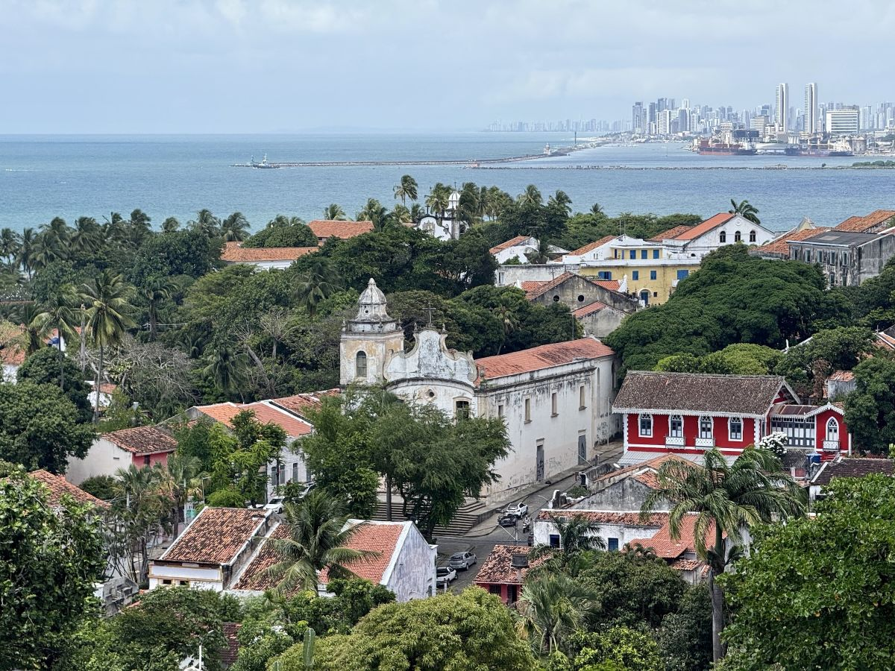
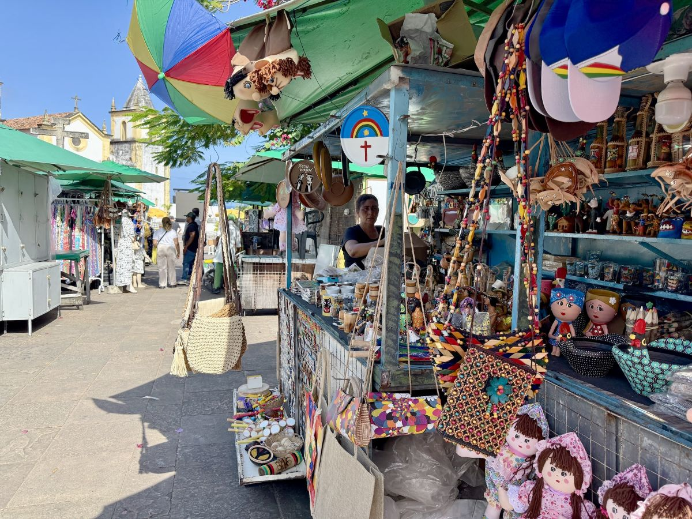
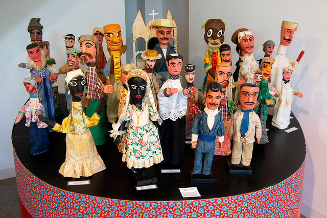

Rota plana
Verificado
Data de verificação:

O Alto da Sé é um dos mirantes mais emblemáticos do Sítio Histórico de Olinda, oferecendo vista panorâmica para o mar, para o casario colonial e para o Recife, além de abrigar a Catedral da Sé, feiras de artesanato e gastronomia típica.




| Dia | Abertura | Fechamento |
|---|---|---|
| Segunda-feira | 00:00 | 23:59 |
| Terça-feira | 00:00 | 23:59 |
| Quarta-feira | 00:00 | 23:59 |
| Quinta-feira | 00:00 | 23:59 |
| Sexta-feira | 00:00 | 23:59 |
| Sábado | 00:00 | 23:59 |
| Domingo | 00:00 | 23:59 |
Telefone: (81) 3429-3169
Entrada gratuita
Não é necessário adquirir ingresso para visitar este ponto turístico.
Verificado
Data de verificação:
Verificado
Data de verificação:
Verificado
Data de verificação:
Endereço: Ladeira da Sé, s/n - Alto da Sé,
Olinda – PE, CEP
53120-440
Valeu muito a pena a visita, com certeza voltarei.
Paisagem inesquecível do alto de Olinda.

